Signal-A Studio
Captures desktop

Pages internes
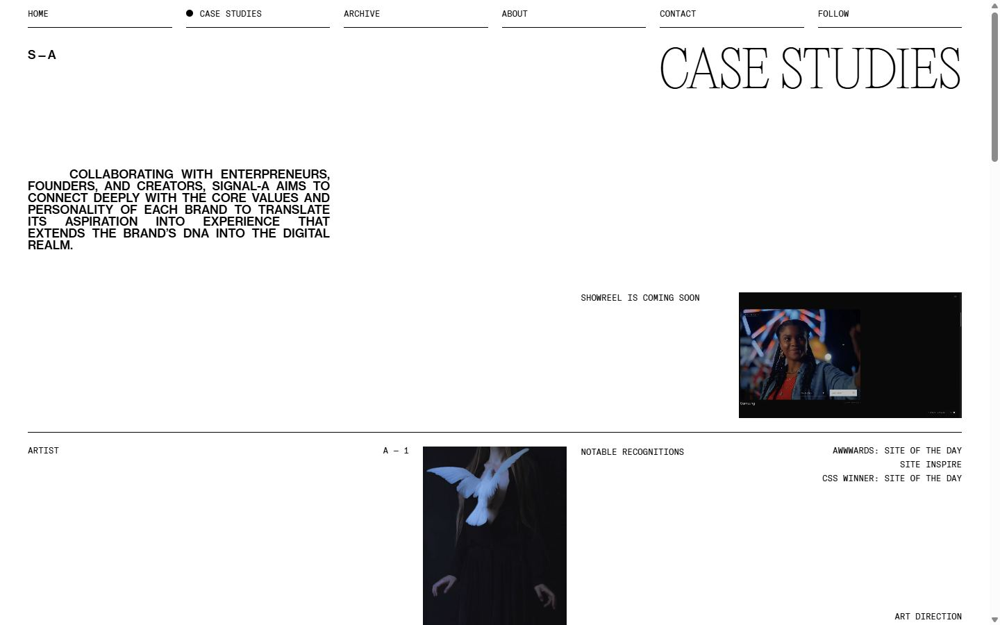
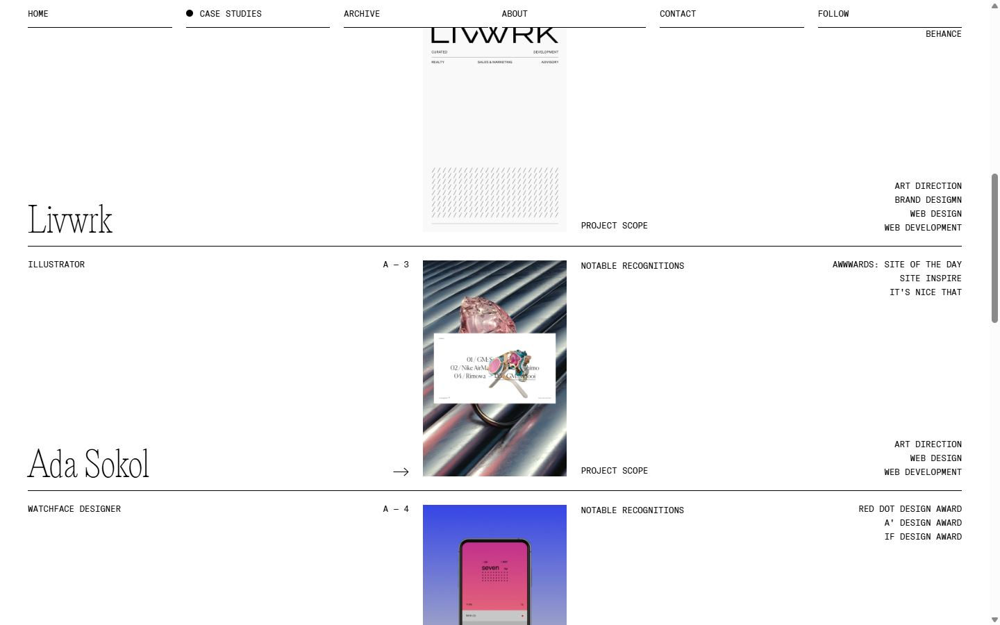
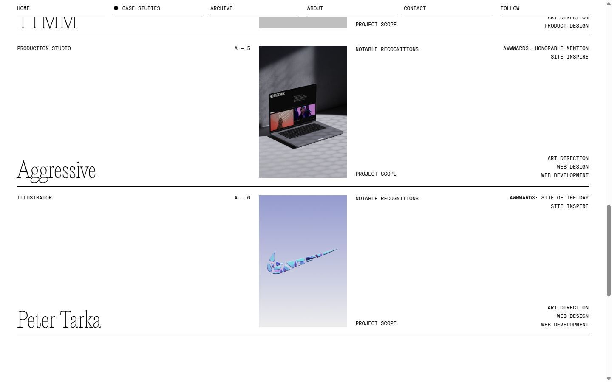
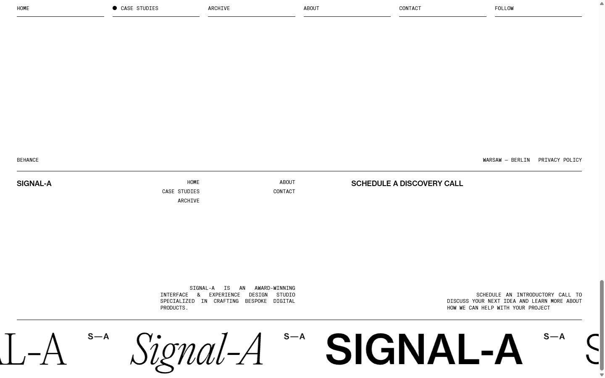
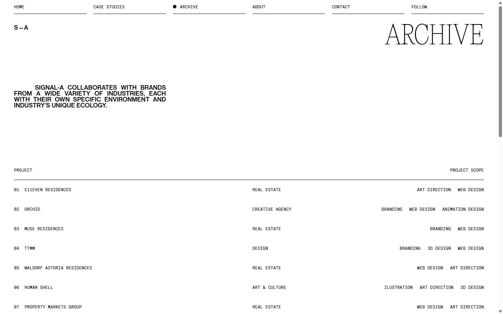
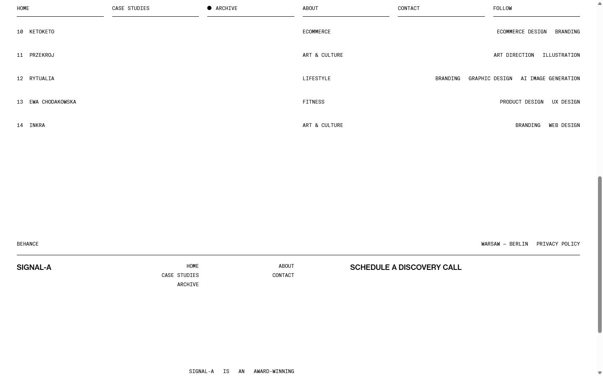
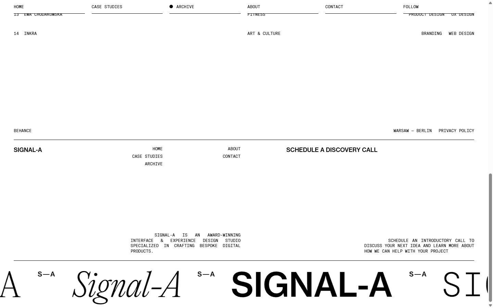
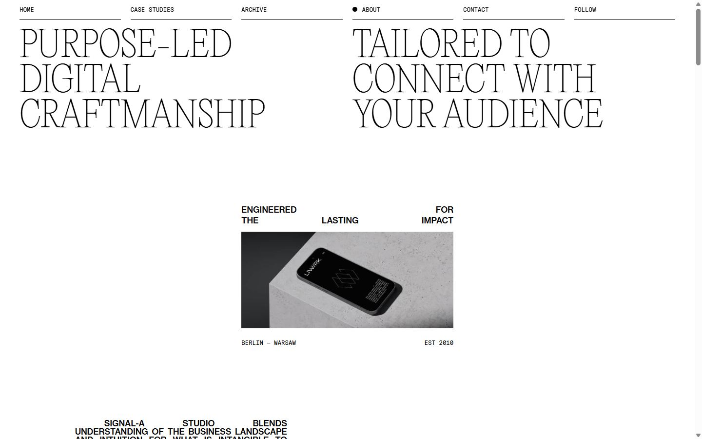
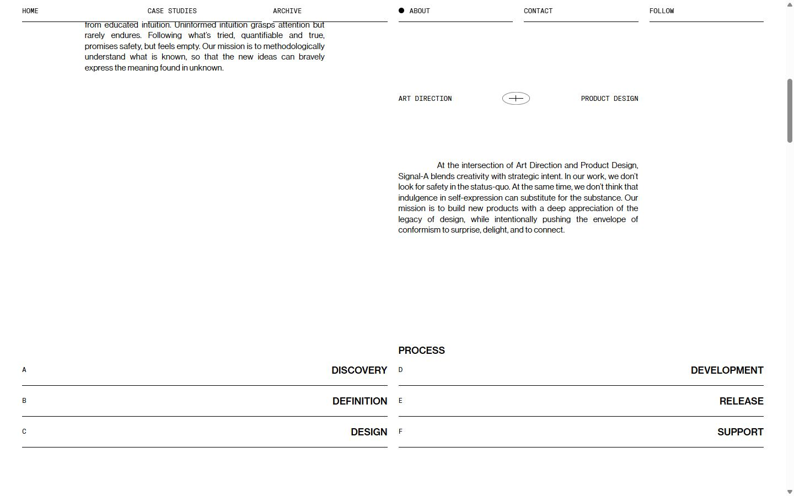
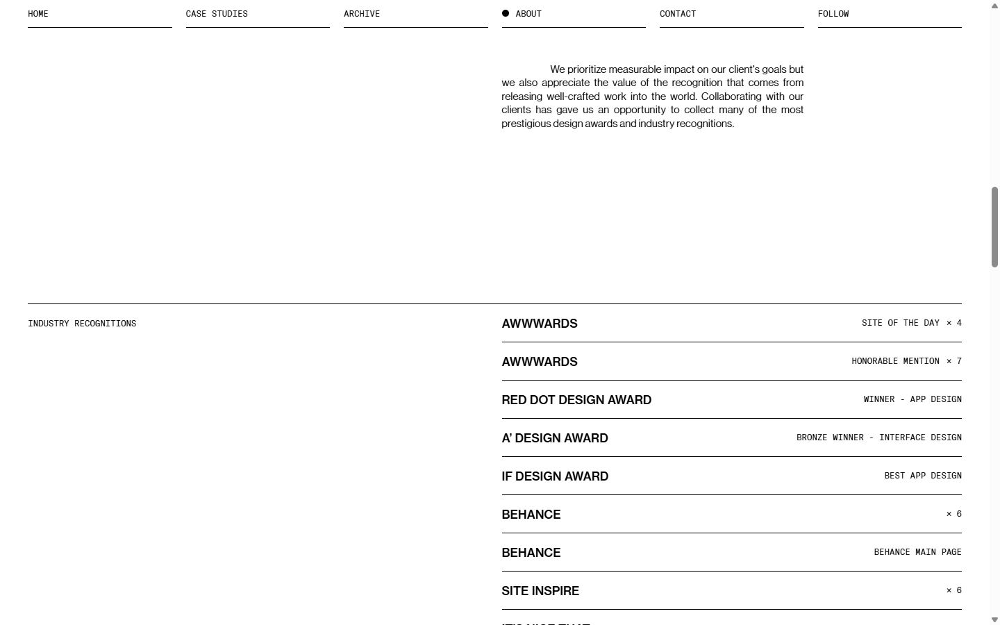
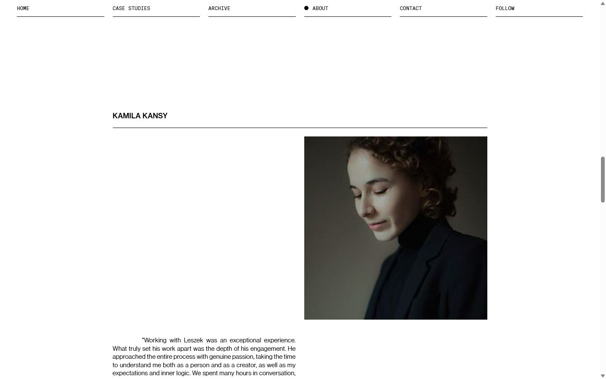
Mobile
Stack détectée
CMS Contentful, GSAP, Lenis, Locomotive Scroll, Lottie, ScrollTrigger, SplitText/SplitType, Swiper, Virtual scroll, Webflow, jQuery
Versions : GSAP 3.11.0 · Three.js r?
Design tokens
Couleurs (fonds, pondérées par surface)
#ffffff · #000000
Couleurs de texte
#000000
Polices utilisées (par volume de texte)
Gt America Mono · Neue Haas Grotesk Text Pro
Fichiers de police chargés
Typographie
| Élément | Police | Taille | Graisse | Interligne | Interlettrage | Casse |
|---|---|---|---|---|---|---|
| a | "Gt America Mono", Arial, sans-serif | 12px | 300 | 12px | normal | uppercase |
| body | "Gt America Mono", Arial, sans-serif | 12px | 300 | 12px | normal | uppercase |
Échelle des tailles de texte
12px (315) · 17px (104) · 23px (12) · 50px (6) · 100px (6) · 30px (4) · 16px (1) · 13px (1)
Arrondis
10px · 1px
Transitions CSS fréquentes
Points de rupture (media queries)
991px · 767px · 479px · 768px · 992px · 1920px · 1400px · 1399px · 480px · 2500px
Animations CSS (@keyframes)
spin, translateX
Variables CSS (:root)
--s-a-black: #000; --s-a-mono-font-default: 10px; --s-a-site-margin-default: 10px; --s-a-gap-default: 10px; --s-a-black-persistent: black; --s-a-default-text: 13px; --s-a-mono-font-gap-default: 4px; --s-a-stroke-width-default: 1px; --s-a-case-study-color-variable: #fff; --s-a-line-height-mono-default: 130%; --s-a-menu-back-height-px: 39px; --s-a-social-buttons-hover: 0px; --s-a-case-study-color-variable-overwrite: #0000; --s-a-menu-back-height: 39%;
Structure de la home
Hauteur : 5921 px — 903 nœuds DOM — canvas 0, vidéos 1, images 54
| # | Bloc | Hauteur | Titre | Médias |
|---|---|---|---|---|
| 1 | div .w-layout-vflex s-a-above-the-fold-wrappe | 855 | 5 | |
| 2 | div .s-a-video-wrapper-muted s-a-video-wrappe | 533 | 1 | |
| 3 | div .s-a-spacer-250 | 250 | 0 | |
| 4 | div .s-a-grid-1-row s-a-hide-on-mobile | 2151 | 7 | |
| 5 | div .s-a-spacer-320 | 320 | 0 | |
| 6 | div .s-a-spacer-320 | 320 | 0 | |
| 7 | div .s-a-grid-1-row s-a-hide-on-mobile top-li | 551 | 10 | |
| 8 | section .s-a-footer section-3 | 524 | 5 |
Navigation :
Boutons / CTA :
SEO
Plan des titres
Performance (mesure locale, Chrome headless, connexion non bridée)
Mobile
Fichiers
captures/ : arrivée, scroll desktop (1440×900), pleine page, pages internes, mobile (390×844 @2x) ; vidéo de scroll dans la release GitHub « videos » (lien en haut de fiche)page.html : DOM rendu · styles.css : CSS chargé · scripts/ : JS chargé (index dans _index.json) · shaders.glsl : shaders extraits · rea-bundle.json : analyse REA du bundle (chunks, routes, endpoints)